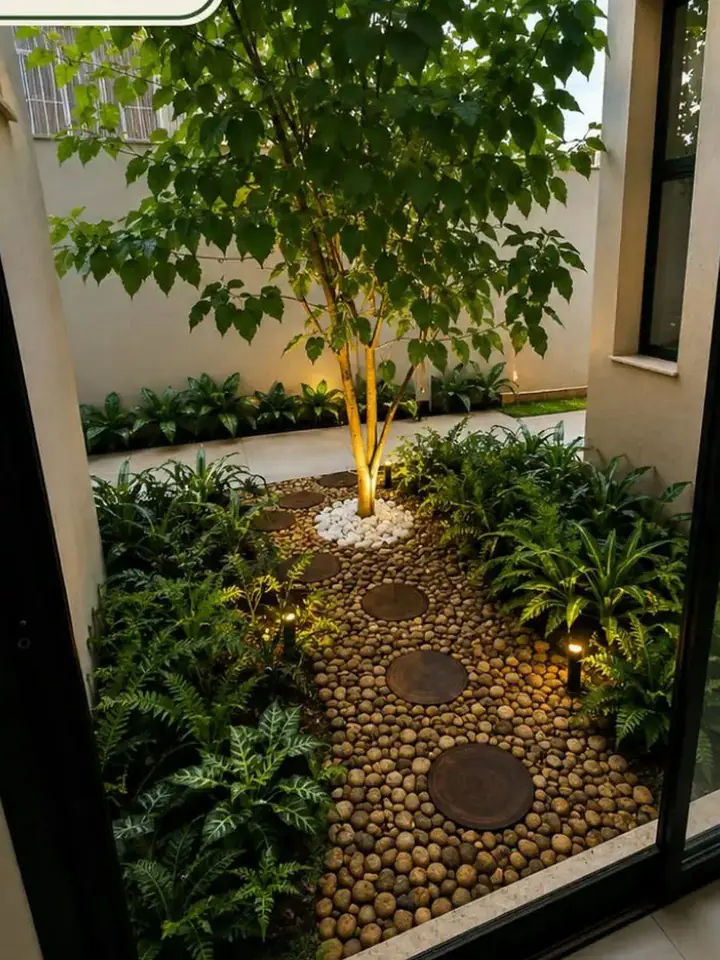
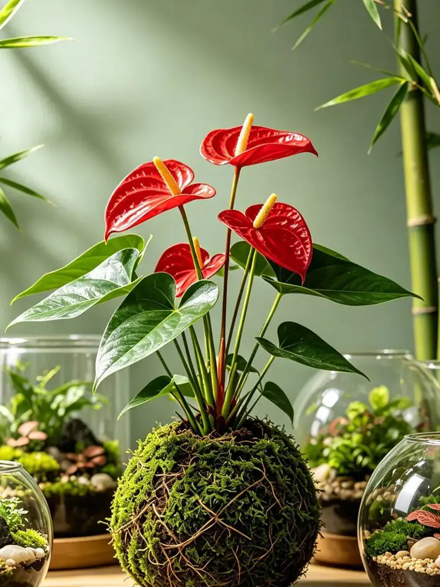
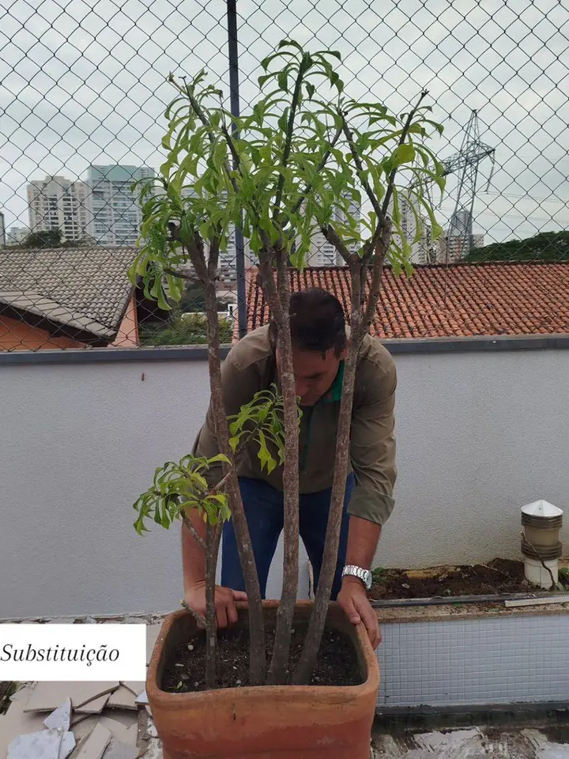

Projetos realizados
Trabalho entregue, não render.
Uma seleção de jardins, canteiros e áreas externas executados pela nossa equipe. Tudo o que está aqui foi para o chão — nada é imagem de computador. Clique para ampliar.






Antes & depois
A mesma metragem. Outro imóvel.
Paisagismo é o investimento que mais devolve percepção de valor por real aplicado. Arraste para ver uma transformação real executada pela Vértice.
- Valorização imediata do imóvel na venda e na locação
- Área externa que a família realmente passa a usar
- Sombra, frescor e menos poeira no dia a dia

 Antes
Depois
Antes
Depois